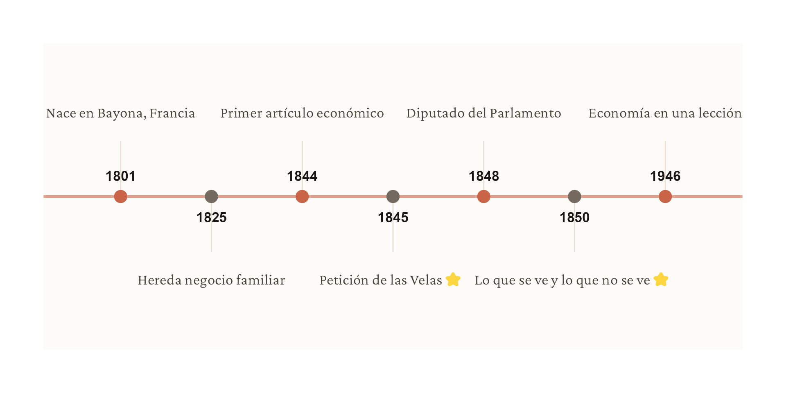
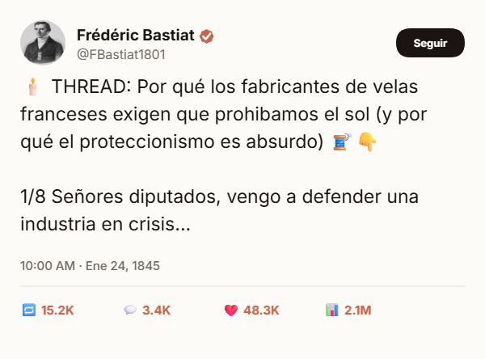
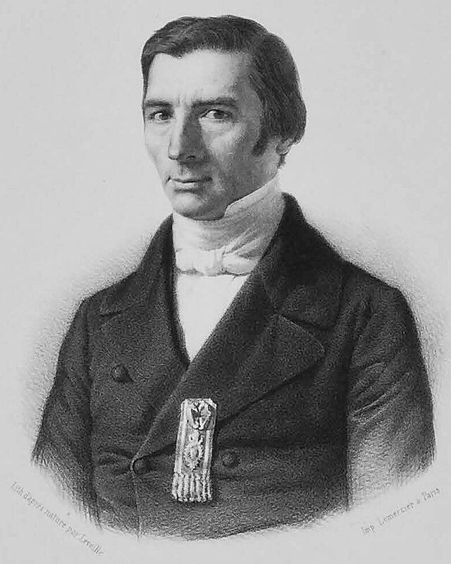

Frédéric Bastiat: El primer economista influencer
Mis predecesores
Fundamentos
La historia del economista que popularizó ‘lo que no se ve’ y por qué sus ideas siguen siendo revolucionarias 170 años después
“En la esfera económica, un acto, una costumbre, una institución, una ley no engendran un solo efecto, sino una serie de ellos. De estos efectos, el primero es sólo el más inmediato; se manifiesta simultáneamente con la causa, se ve. Los otros aparecen sucesivamente, no se ven…”
— Frédéric Bastiat
Cuando piensas en un economista, probablemente imaginas esto: un personaje de traje gris, cara seria, una hoja de Excel debajo del brazo y un lenguaje tan técnico que parece diseñado para curar el insomnio.
Estoy seguro de que esa descripción hizo clic en muchos de ustedes.
Pero, ¿qué pasaría si les dijera que hace 170 años existió un economista que rompió ese molde? Alguien con un lenguaje directo, sarcástico y tan visual que, si viviera hoy, sus ensayos serían hilos virales en Twitter o posts de Instagram.
¿Acaso existió tal personaje? Sí.
Les presento a Frédéric Bastiat: el primer economista influencer de la historia.
• • •
El Sol vs. Las Velas
En 1845, el parlamento francés se encontraba discutiendo formas de “bloquear” la entrada de productos extranjeros. ¿Su argumento? Que eran muy baratos y eso representaba una competencia desleal para la industria nacional.
¿Cuál creen que fue la respuesta de Bastiat ante esta situación? No usó fórmulas complejas, usó el ridículo. Mejor léanlo ustedes mismos:
“Señores diputados, sufrimos la competencia intolerable de un rival extranjero que nos inunda con luz a un precio imposible de igualar (precio cero). Ese rival es… EL SOL.”
Y aquí, señoras y señores, nace uno de los relatos más influyentes del pensamiento económico: la Petición de los Fabricantes de Velas, una sátira brillante al absurdo de algunos argumentos proteccionistas.
El método viral de Bastiat
Sus ensayos eran cortos (3-10 páginas), publicados en periódicos (el “feed” de la época), llenos de sátira y ejemplos cotidianos. La “Petición de las velas” fue reproducida en decenas de periódicos europeos. Era el primer “thread” viral de economía.

El Costo de Oportunidad (Lo que no se ve)
La visión de Bastiat va más allá de la sátira. Su aporte más duradero fue popularizar un concepto fundamental: el costo de oportunidad. En economía, esto es el pan de cada día: si elegimos algo, automáticamente renunciamos a otra cosa.
Hace 170 años, Bastiat lo explicaba de manera simple con su historia de la ventana rota. Adaptémosla a nuestro país.
El caso de Juan
Imaginemos a Juan, un pequeño agricultor de plátanos en Baní. Dedica meses de sudor a sus cultivos, pero en septiembre, un huracán arrasa con todo. Juan lo pierde todo: 3 tareas de plátanos a punto de cosecha, meses de trabajo, su ingreso del año.
Ante la catástrofe, el Estado decide extenderle RD$50,000 Para comprar semillas y volver a sembrar
¿Alguien en su sano juicio se atrevería a celebrar diciendo: “¡Qué bien! Ahora el vendedor de semillas recibirá dinero y eso moverá la economía”?
Ciertamente no. La intuición nos grita que destruir riqueza (los plátanos listos para comer) nunca puede ser causa de prosperidad, aunque genere una transacción nueva (las semillas).
Esta analogía es la llamada “Falacia de la Ventana Rota”, y sigue siendo, hasta hoy, la explicación más didáctica sobre por qué la destrucción nunca es rentable.
La trampa del zoom macroeconómico
Sin embargo, cuando ampliamos el zoom a nivel macroeconómico, a veces escuchamos exactamente esa lógica perversa:
“El huracán destruyó X, pero ahora habrá reconstrucción. Eso moverá la economía. El cemento, las láminas de zinc, los materiales… todo eso genera actividad económica.”
Técnicamente cierto. Pero ¿a qué costo? Juan perdió meses de producción que nunca se recuperarán. La economía no creció, apenas intentó volver al punto de partida.
La Falacia de la Ventana Rota aplicada a Juan
Lo que SE VE: - Estado da RD$50,000 a Juan - Vendedor de semillas tiene ingreso - “Actividad económica generada”
Lo que NO SE VE: - 3 tareas de plátanos perdidas - Ingreso anual de Juan evaporado - Desarrollo retrasado meses - Dinero del Estado que no fue a educación/salud
Resultado: No hay ganancia neta, solo reposición de lo destruido.
• • •

Mi Predecesor
La cita con la que abrí este artículo culmina con una sentencia demoledora:
“Toda la diferencia entre un mal y un buen economista es ésta: uno se limita al efecto visible; el otro tiene en cuenta el efecto que se ve y los que hay que prever.”
Bastiat murió joven, a la edad de 49 años, pero ese tiempo le bastó para crear una línea de pensamiento que lo consagra como uno de mis predecesores intelectuales.
¿Por qué 1946? Aunque Bastiat murió en 1850, sus ideas evitaron el olvido gracias a Henry Hazlitt. En su bestseller Economía en una lección (1946), Hazlitt dedica su primer capítulo a la “Ventana Rota”, citando a Bastiat como la inspiración fundamental para entender que la destrucción nunca es estímulo. Sin Hazlitt, probablemente Bastiat sería hoy un autor oscuro de nicho en lugar de un pilar de la divulgación económica.
La pregunta de Bastiat, hoy
La próxima vez que un evento natural golpee al país y escuches “esto reactivará la construcción”, piensa en Juan. Piensa en sus 3 tareas de plátanos que nunca verá crecer. Piensa en el ingreso que no tendrá.
Y pregúntate: ¿Estoy viendo solo lo visible (cemento, zinc, actividad)? ¿O también lo invisible (producción perdida, desarrollo retrasado, riqueza destruida)?
Esa es la diferencia entre un mal y un buen análisis económico. Bastiat lo sabía hace 170 años. Nosotros aún estamos aprendiendo.
Fuentes & Referencias Intelectuales
Bastiat, F. (1850)
"Ce qu’on voit et ce qu’on ne voit pas". Ensayo donde introduce la distinción entre efectos visibles e invisibles y formula la Falacia de la Ventana Rota.
Leer ensayo original ↗Bastiat, F. (1845)
"Petition of the Candle Makers". Sátira económica contra el proteccionismo, usando el absurdo como herramienta analítica.
Leer sátira completa ↗Hazlitt, H. (1946)
Economics in One Lesson. Obra clave de divulgación moderna que rescata y populariza el argumento de la Ventana Rota de Bastiat.
Consultar libro (Archivo) ↗